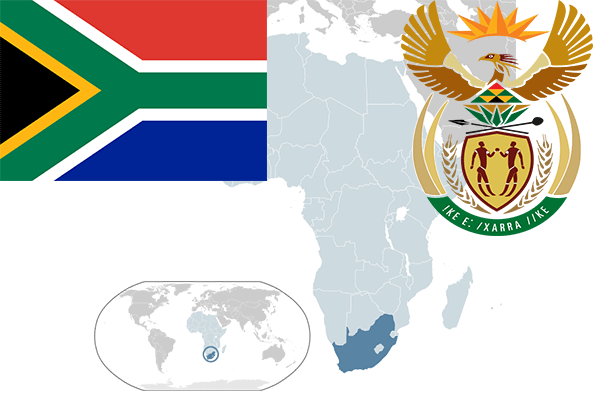

To`liq nomi: Janubiy Afrika Respublikasi
Region: Janubiy Afrika
Qonunchilik shakli: Unitar respublika
Mustaqillik kuni: 31 may 1910-yil
Poytaxt: Keyptaun
Maydoni: 1,219,912 km²
Chegaradosh davlatlari: Namibiya, Botsvana, Zimbabve, Mozambik, Svazilend, Lesoto.
Aholisi: 54 956 900 (2015-yil)
Aholi zichligi: 41 /км²
Aholining o`rtacha yoshi: 57,63 yil
Rasmiy tili: Ingliz tili
Dini: -
Pul birligi: Janubiy Afrika rendi
Telefon prefiksi: +27
Internet domen: .za
Xalqaro tashkilotlarga a`zoligi: BMT
Dengiz va okeanlarga chiqishi: Atlantika okeani, Tinch okeani
YIM: Butun: $ 505,2 (2010-yil) Jon boshiga: $10 402
Yirik shaharlari: Keyptaun, Durban, Priterya